기술 스택
데이터 분석부터 시각화까지, 다양한 도구를 활용합니다.
SQLBigQuery, 윈도우 함수, 서브쿼리
85%
Pythonpandas, scikit-learn, SHAP, LightGBM
80%
TableauKPI 대시보드 설계, 인터랙티브 시각화
75%
Streamlit인터랙티브 웹 대시보드
70%
matplotlib / seaborn정적 차트, 통계 시각화
80%
Claude CodeAI 에이전트 파이프라인, 자동 분석
70%
프로젝트
데이터 분석 역량을 쌓으며 진행한 주요 프로젝트들입니다.
팀 프로젝트 · 2026.02
서울 에어비앤비 호스트 수익 최적화
서울 25개 자치구의 에어비앤비 리스팅 데이터를 분석하여 RevPAR 예측 모델을 구축하고,
SHAP 기반 모델 해석과 K-Means 클러스터링을 통해 시장을 세분화했습니다.
담당 역할
- – RevPAR 예측 모델 구축 (LightGBM 2-Stage)
- – SHAP 기반 피처 중요도 분석 및 모델 해석
- – K-Means 클러스터링으로 4개 시장 세그먼트 도출
- – Streamlit 인터랙티브 대시보드 구현
분석 결과
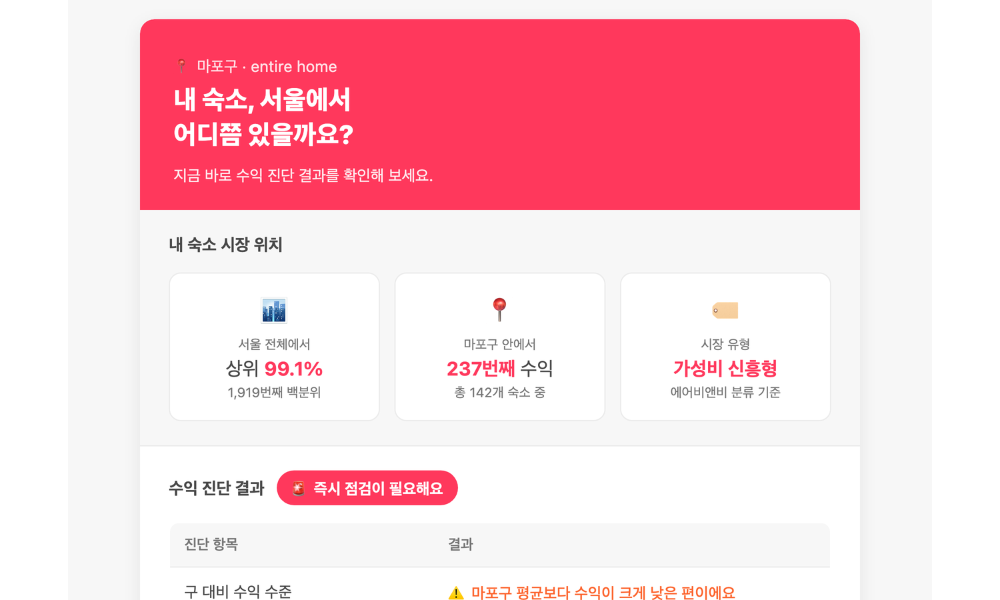
무료 진단 — 시장 위치 분석
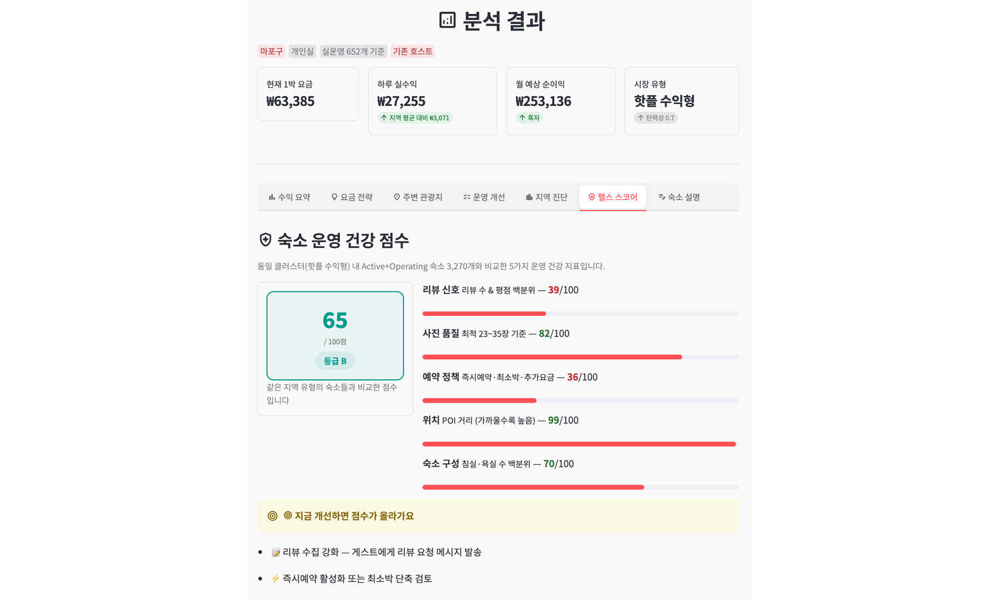
상세 분석 — 숙소 운영 건강 점수
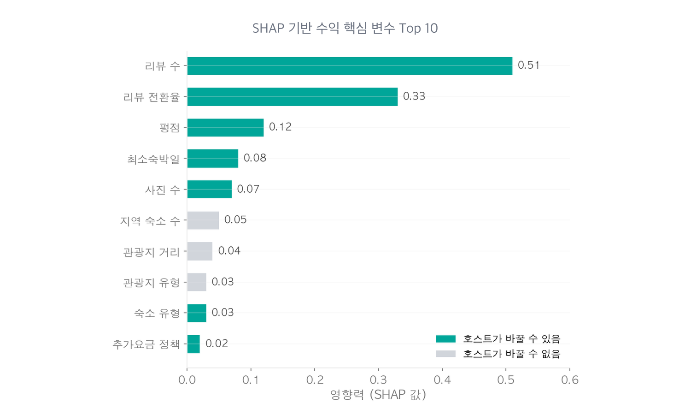
SHAP 피처 중요도 분석
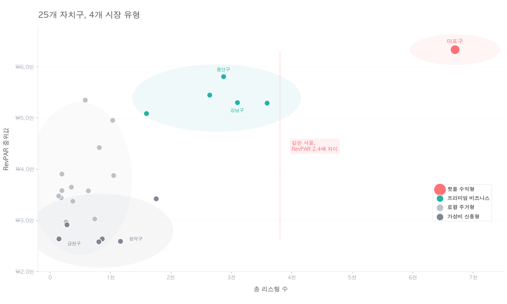
K-Means 시장 세분화
Python
scikit-learn
SHAP
Streamlit
Claude Code
팀 프로젝트 · 2025.02
LendingClub 대출 부도 예측 & 투자 전략
226만 건의 P2P 대출 데이터로 부도 예측 모델(3종 비교)을 구축하고,
SHAP 해석 및 투자 포트폴리오 전략을 도출했습니다.
담당 역할
- – 전처리 파이프라인 설계 (151개 변수 → 분석용 서브셋)
- – 3종 모델 비교 (Logistic Regression / Random Forest / LightGBM)
- – SHAP 기반 모델 해석 및 피처 중요도 분석
- – 등급별 리스크-수익률 분석 및 포트폴리오 전략 도출
분석 결과
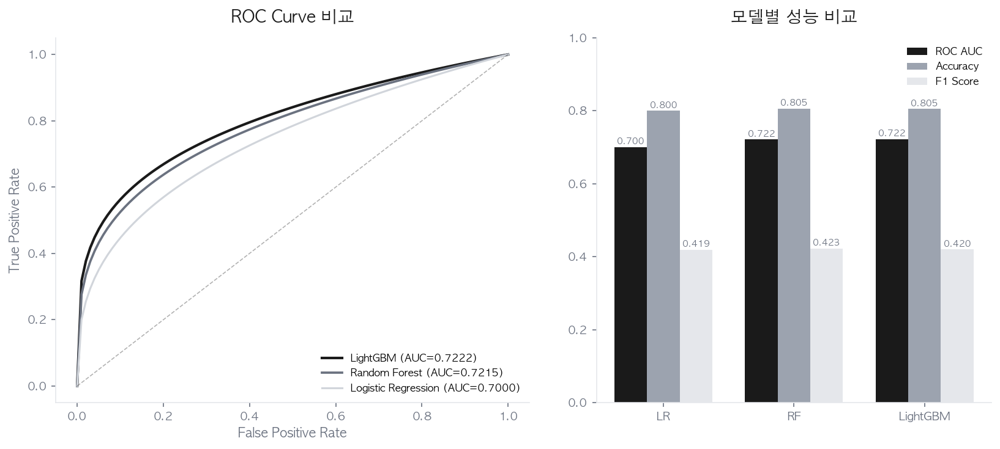
ROC 곡선 및 모델 성능 비교
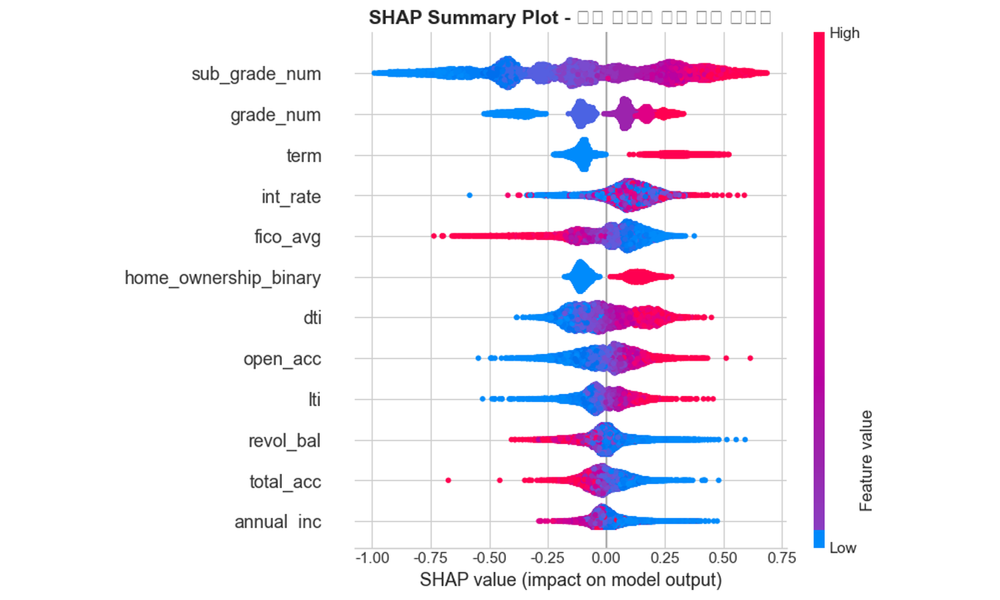
SHAP Summary Plot
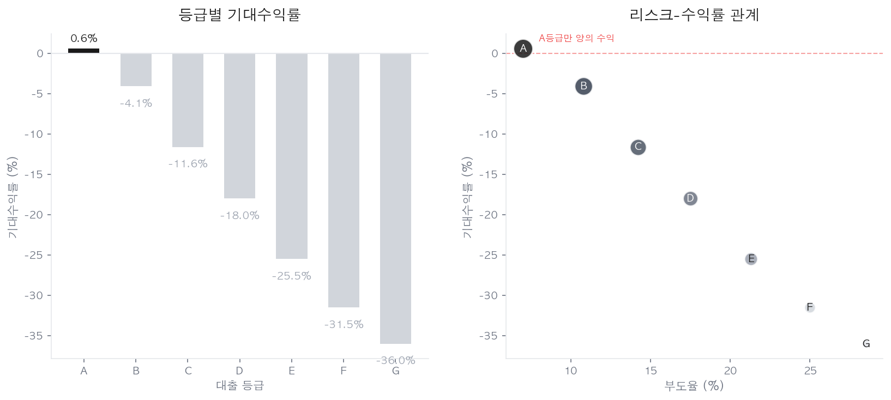
등급별 리스크-수익률 분석
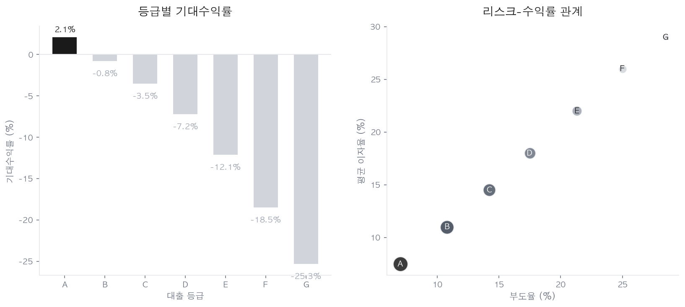
등급별 최적 투자 포트폴리오 전략
Python
LightGBM
SHAP
scikit-learn
seaborn
GitHub →
팀 프로젝트 · 2025.01
Google Merchandise Store 매출 전환 분석
Google Analytics 90만 세션 데이터를 분석하여 채널별 매출 전환 효율 격차를
통계적으로 검증하고 마케팅 예산 재배분 전략을 수립했습니다.
담당 역할
- – BigQuery에서 원본 데이터 추출 및 전처리 파이프라인 설계
- – 채널별 매출 전환 퍼널 심화 분석 (Step-to-Step 이탈률)
- – 통계 검정 수행 (Kruskal-Wallis, Z-Test, Chi-squared) 및 효과 크기 보고
- – 사용자 가치 세그먼트(FM 기반) 설계 및 파레토 분석
- – 비즈니스 인사이트 종합 및 마케팅 전략 제안
분석 결과
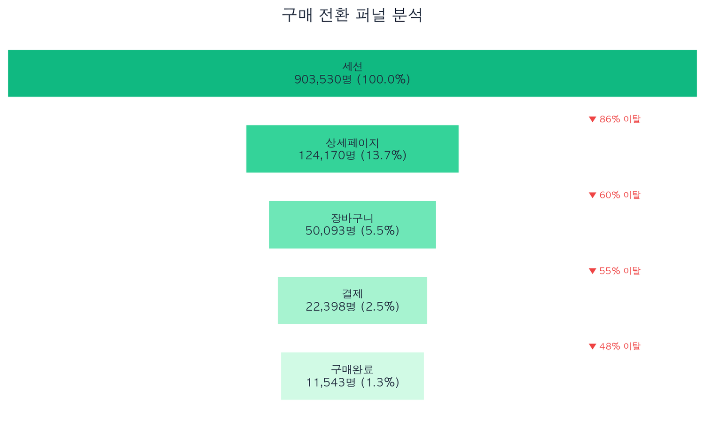
구매 전환 퍼널 단계별 이탈률
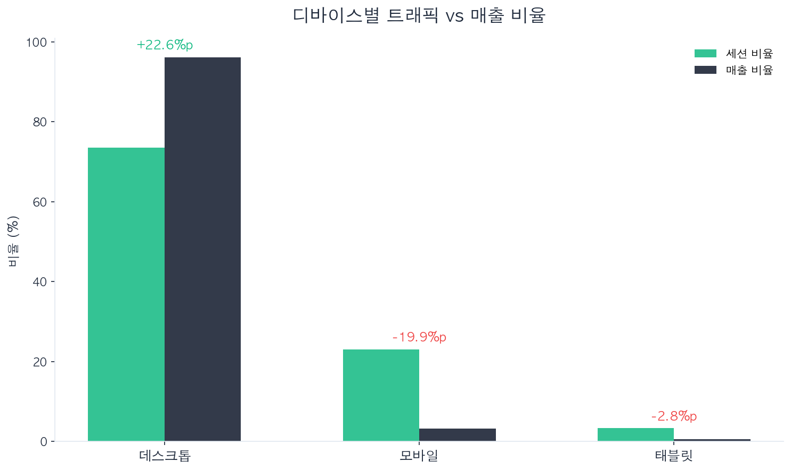
디바이스별 트래픽 vs 매출 비율 갭
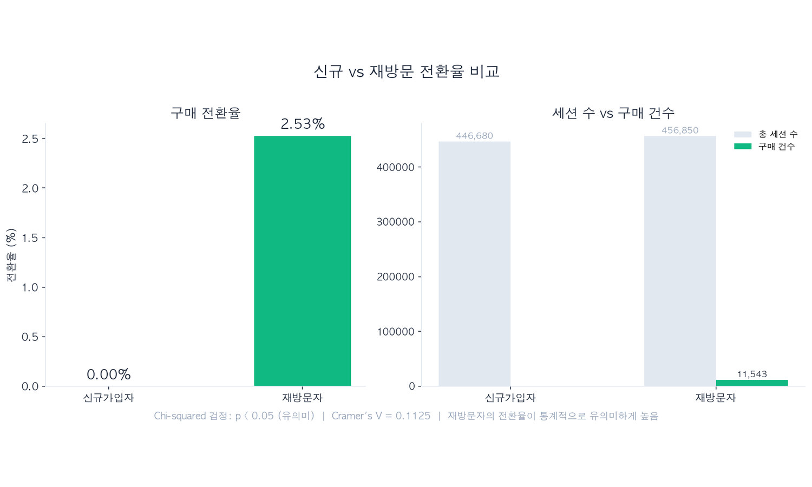
신규 vs 재방문 전환율 (Cramer's V = 0.1125)
Python
BigQuery
scipy
seaborn
scikit-learn
GitHub →
이력서
데이터 기반 의사결정에 기여하는 분석가입니다.
JM
이정모
데이터 분석가 | CS 6년 경력 전환 | AI 활용 분석
PDF 준비중
함께 일해요
데이터 분석 프로젝트나 협업 제안이 있으시면 언제든지 연락해 주세요.
© 2026 이정모 · Data Analyst